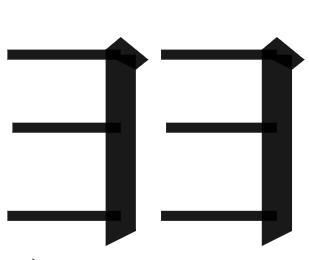
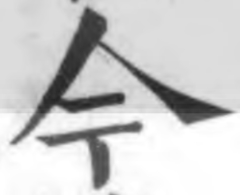
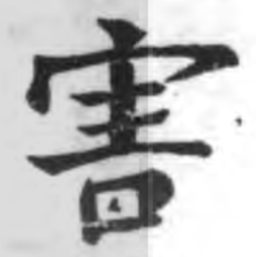
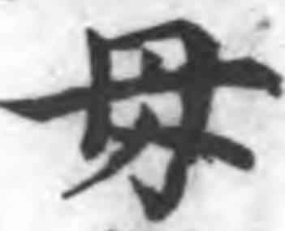
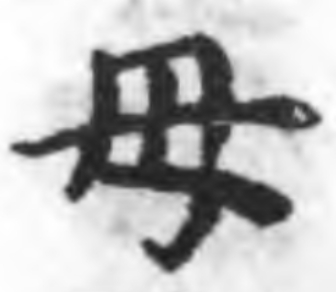

道藏庄子白文数字化
两年前的毕业总结里，我为自己画了个顿号，希望自己能不断进步。
2021年12月末，我搭建了个人网站。
2022年，我做了The Collection of Chuangtzu（文献篇），并尽可能找齐目录中的电子资源。
2023年，依托前两年的成果，我结识了一些同好，并一起做了些东西出来，特在此做个分享：《道藏》庄子白文的数字化。
github链接：https://github.com/tobeabooker/ChuangTzu-text
所有内容包括6个pdf文件，一个html文件，以及一个img文件夹。以下是html文件中的使用说明。
使用说明
原始文本来自Kanripo漢籍正統道藏三家本 《南華真經》 。
Kanripo漢籍的图像与文字不能对应。国学大师用的是Kanripo漢籍的数据，有同样的问题。瀚堂典藏的文本质量很差。 zigangchen的道藏续道藏全文检索系统文本质量亦不佳，且似乎没法对应到原pdf每一页。学衡数据则缺少这一文本。
最终文本的得出过程如下：1.校对Kanripo漢籍的文本（二校到《胠篋》）；2.校对看典古籍的ocr文本；3.将前两者的文本进行对比。
pdf图像来自国图藏道藏。我所找到的涵芬楼道藏为djvu格式，此格式的不足可参看老马的帖子。djvu是有损的，可能会导致与原书图像不一致。此外，涵芬楼本影印时有描改，与国图本有多处字形不一致。
国图的道藏与涵芬楼道藏跳转页码可以互通，需要设置pdf的baseNum、更改pdf路径，同时将国图的5卷按照涵芬楼的顺序组合成3个pdf（也可以将国图与涵芬楼都合并为1个pdf）。三家本道藏进行了拼版，因此页码不可以互换。
国图的道藏与涵芬楼道藏互换页码时，如果想要改变显示的页码数字，可以使用js或其他方式，对每个页码数字加上一个固定数。
pdf页面的跳转功能只有在火狐浏览器上才能实现。
文本每行与道藏原本一致。当某句话断为两行/两页，会检索不到。因此要减少检索的字符数。如果想去除换行符，可以在html文件中查找删除
</p><p>。对于有编码的异体字（如𡨋、𣗳），以异体字的形式呈现。检索模式，可以一键将有编码的异体字转为正字。
对于无编码的异体字（如、），以正字的形式呈现，同时鼠标悬浮时可显示文字截图。这类异体字以蓝色标注。
对于一些无编码，但又因为各种原因没加图片的字，汇总如下：
髙高类：嗃謞蒿槁享淳郭蜳孰熟槨膏毫豪譹鬻停
巳㔾类：卷勌捲卮扼阨危峗詭跪怨服（犯有编码）
𫝕辰类：鎒震唇振脣（𫝕、𭔱、𭆒有编码）
過类：骨滑蝸禍體
毋母类：母晦敏繁侮海誨拇（、有编码）
冉类：再構稱聃講溝
昜类：陽揚賜湯暢觴傷蕩
羽类：躍藋羿翟繆寥瘳戮謬翣蓼擢膠
黒黑类：墨薰黨黔黜黥矰儵熏（黙、曽有编码）
今类：琴含貪矜
害类：害犗割
 某类：某媒謀
某类：某媒謀土士类：結（𡉟有编码）
上匕类：指
𮍌臣类：臣臧藏賢卧（这类字字形几乎没差别，不改为𮍌）
巳已己类：已己忌起（古籍中已己常写为巳，这类字直接用原字）
值得说明的是，其中有些字有多种字形。如：母字末笔有出头的，也有未出头的。“豚子食於其𭮀者”，“所愛其者”，两种字形出现相差仅一页。
对于一些本人认为比较重要的字（与版本有关、与其他本相差较大、可能写错），以红色标注。
在校对过程中，使用了字统网、中华书局字符查询、看典古籍的ocr与校对系统（校对界面很方便，可以导出文本pdf，但存在异体字无法保存的问题）、如是古籍的多文本对比系统。在此感谢各位开发者的付出。
网友noodles促成了此项目的开始，并校对了看典古籍的ocr文本，订正了许多我漏校的字。在此万分感谢。
由于个人时间与能力有限，仍存在许多不足之处，因此欢迎任何人指教。本人邮箱：jiangxuan77@qq.com。